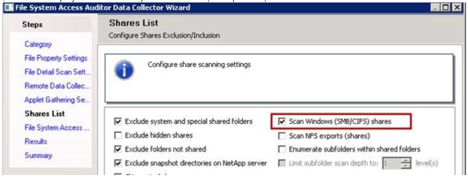

Summary: The FSAA Scan conditionally checks for the presence of and access to the IPC$ share as a prerequisite to scanning. When an error is returned, the scan is aborted.
Issue: IPC$-related errors prevent scanning of CIFS shares and may cause data loss.
Instructions: Basics
What is IPC$ share is used for "Inter-Process Communication" and is often referred to as a "Null session connection".
In FSAA, it comes into play whenever this option is selected (CIFS protocol).

Incidence at large enterprise customer:
| Error Message | Count | Percent |
| The network path was not found | 171876 | 83.01% |
| Logon failure: unknown user name or bad password | 28646 | 13.84% |
| The network name cannot be found | 3560 | 1.72% |
| Logon Failure: The target account name is incorrect | 668 | 0.32% |
| The referenced account is currently locked out and may not be logged on to | 618 | 0.30% |
| The specified network name is no longer available | 530 | 0.26% |
| The specified server cannot perform the requested operation | 479 | 0.23% |
| The account is not authorized to log in from this station | 170 | 0.08% |
| There are currently no logon servers available to service the logon request | 97 | 0.05% |
| The trust relationship between this workstation and the primary domain failed | 91 | 0.04% |
| Access is denied | 82 | 0.04% |
| The system detected a possible attempt to compromise security. Please ensure that you can contact the server that authenticated you | 58 | 0.03% |
| Logon failure: the user has not been granted the requested logon type at this computer | 56 | 0.03% |
| An unexpected network error occurred | 34 | 0.02% |
| The request is not supported | 30 | 0.01% |
| There is a time and/or date difference between the client and server | 26 | 0.01% |
| Attempt to access invalid address | 9 | 0.00% |
| Insufficient system resources exist to complete the requested service | 7 | 0.00% |
| No mapping between account names and security IDs was done | 5 | 0.00% |
| An internal error occurred | 3 | 0.00% |
| No more connections can be made to this remote computer at this time because there are already as many connections as the computer can accept | 1 | 0.00% |
| Not enough storage is available to process this command | 1 | 0.00% |
| The semaphore timeout period has expired | 1 | 0.00% |
| Total | 207048 | 100.00% |
Troubleshooting Steps Quick Hits
- Can you list shares on the target in Windows Explorer?
- Can you browse to them?
- Browse to an admin share (C$)?
- What about using the service account?
- Do you get the same error in applet mode that you do in local or proxy mode? When scanning via IP address?
Note: the IPC$ check has been removed from Applet mode, starting with FSAA version 8.0.827 / 8.1.909.
- Can you connect to Computer Management or list shares using WMI?